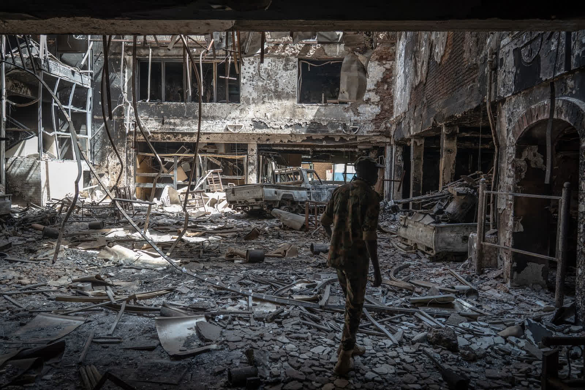
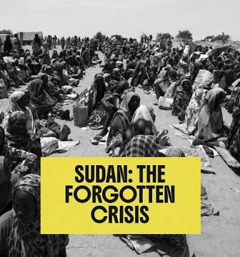
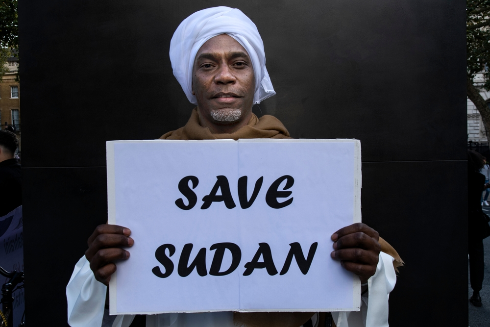

01
An internal war between two forces
In April 2023, a war started between Sudan’s army and a group called the Rapid Support Forces (RSF). Tens of thousands of people have died. Ordinary families are caught in the middle and have nowhere safe to go.
Sudan
Millions of people are running, starving and waiting for help. Their story deserves to be heard.
01
In April 2023, a war started between Sudan’s army and a group called the Rapid Support Forces (RSF). Tens of thousands of people have died. Ordinary families are caught in the middle and have nowhere safe to go.
02
About 12 million people have been forced to leave their homes. Millions more have crossed into nearby countries. This is the largest displacement crisis in the world

03
Experts have confirmed famine in El Fasher and Kadugli, and many more places could be next. Armed groups surround towns and cut off food, and hunger is being used as a weapon of war. Famine means that so many people have no food that they start to die from hunger. Children are the first to suffer.
04
In October 2025, the RSF took over the city of El Fasher after surrounding it for 18 months. UN investigators said the RSF’s actions there showed signs of genocide; meaning they were trying to kill a whole group of people.

05
The UN’s top aid official in Sudan said this war is not only forgotten, it has been abandoned. Very little help is coming. In April 2026, the UN plan to help over 20 million people in Sudan had only about 16% of the money it needed.
06
The army and the RSF must both stop attacking civilians and let food and medicine in. People who commit war crimes must be punished. The UN, the African Union and the Arab League must push for a ceasefire, and the world must send more help.
